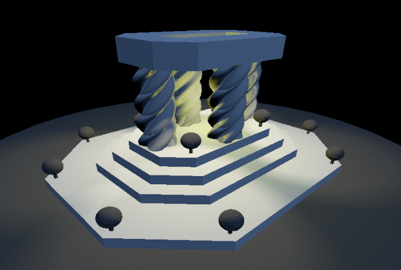
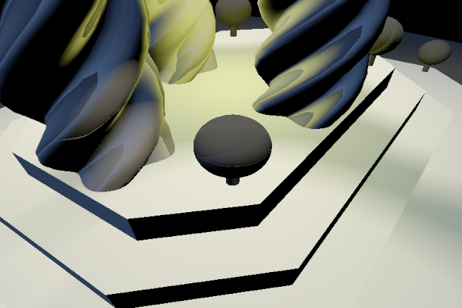

For my final project I implemented clustering of triangles within objects to reduce the amount of references to an object and optimize what triangles are passed to the shader for a given object.
Cluster culling activated by including the argument --culling cluster
I used the lighting-mix scene from the s72 examples

Fig 1. Full Scene

Fig 2. Close Up Scene
For each mesh I gave it a list of Clusters which include the list of triangle indices that are in that cluster as well as the cluster's bounding box.
When culling the clusters, I approached this same as checking if a mesh's bounding box is in the frustum. I simply checked if the bounding box for the cluster was in the camera view.
I didn't check for visibility however I feel as if doing that would make cluster culling more effective at removing unused clusters from being passed to the shaders.
After the mesh's are loaded in RTG I imideiately create the clusters as spatial partitions of the mesh. I did this using a simple approach to oct-trees except without the tree structure.
I first found the center of the bounding box enclosing all of the triangles and then chose to split the box along whichever of the x,y,z axis that seperated the number of triangles in half as close to possible. Althought I didn't maintain the tree structure this proved to be a quick and effective way to find clusters with a certain max size.
I used a max cluster size of 128 as suggested by Unreal's talk on "Nanite: A Deep Dive". This also helped to keep the clusters size under a nice fixed size that is good for passing to the GPU.
| Time of Frame (seconds) | ||
|---|---|---|
| Full Scene | Close Up | |
| Object culling | 0.0040 | 0.0045 |
| Cluster culling | 0.0123 | 0.0082 |
It looks like this implementation for cluster culling didn't lead to a speed up. In fact it lead to a 2-3 times slowdown :( . This is likely due to the time that it takes to check visibility of each individual cluster in the scene for every frame instead of just checking one mesh bounding box. Although we are cutting down on the number of unused triangles that are being passed to the vertex shaders, we are sending more objects to the shaders which may affect resource management and double computing along edges.
I really enjoyed this project exploration into considreing how breaking up meshes could effect performance. I believe that better aproaches could lead to better speedups in frame computation. If I was to do this again or had more time, I would try to add a tree structure to the clusters in a mesh and pass the triangles for one mesh instance all in one instead of as seperate clusters. I wish this final project was a little more guided but that's probably just becasue my brain was so scattered and would have benefited from simplicity.